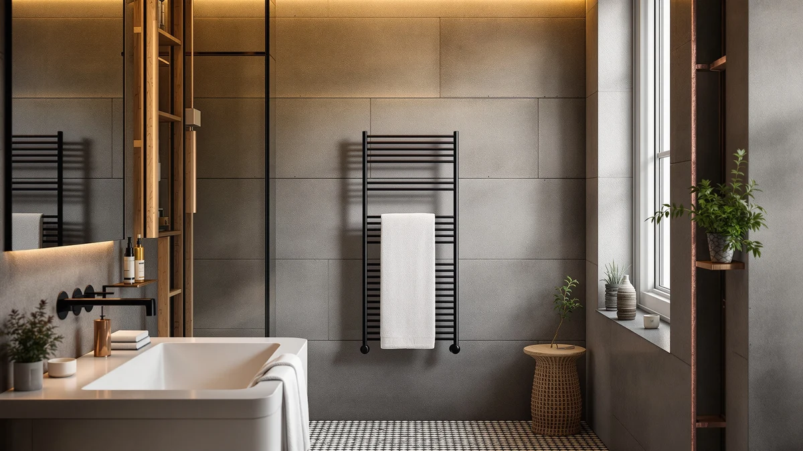

AquivaCoast Electric Heated Towel Rack Review (2026): Worth It?


Quick Answer
This AquivaCoast Electric Heated Towel Rack review compares the $205.99 eight-bar stainless steel warmer against three ENZE Smart Rotating Heated Towel alternatives priced at $189.99. If your bathroom has room for an eight-bar rack and you want a higher maximum temperature than a basic plug-in warmer offers, the AquivaCoast is the one to check first.
Our pick: AquivaCoast Electric Heated Towel Rack, $205.99 Check Price on Amazon
Bottom line: our top pick is the AquivaCoast Electric Heated Towel Rack for Bathroom at $205.99.
Things to Know Before You Buy
- The AquivaCoast heats all eight bars with a 200W element in about 10 to 15 minutes, while the three ENZE alternatives below use a smaller 100W to 120W element that reaches about 120°F in roughly 5 minutes, so you are trading top-end heat and bar count for a faster warmup.
- AquivaCoast lists this rack as IPX4 water resistant, which covers splashing water, while the ENZE alternatives carry an IPX5 rating. If a higher water resistance rating near your shower matters more than extra bars, see our wider list of wall-mounted heated towel racks for other options at that rating.
- The AquivaCoast skips built-in WiFi. Its listing notes it works with smart plug, so you would need a separate smart plug accessory for remote control, unlike the ENZE models, which pair with the Tuya app and Alexa or Google Assistant out of the box. Check our towel warmers with WiFi roundup if app control is a priority.
- Neither the AquivaCoast nor any of the three ENZE alternatives in this comparison currently show a published Amazon rating or review count, so this AquivaCoast Electric Heated Towel Rack review leans on listed specs and pricing rather than verified owner scores.
- At $205.99, the AquivaCoast costs $16 more than any of the ENZE options, a premium that buys a removable top shelf, a higher 140°F maximum temperature, and three extra bars.
This AquivaCoast Electric Heated Towel Rack review looks at whether the $205.99 eight-bar warmer earns its price over three ENZE Smart Rotating Heated Towel alternatives, each listed at $189.99. A heated towel rack is a small upgrade, but at over $200 you want to know the extra bars and top shelf are worth more than the money you would save going with a smaller ENZE rack. AquivaCoast builds this rack with eight main bars plus three on the top shelf, a stainless steel frame, and a 200W element that reaches a stated 140°F, numbers that put it ahead of the ENZE lineup on raw heating capacity and hanging space.
The decision here comes down to how much bar count and heat range matter to you against convenience features. The three ENZE alternatives pair with the Tuya app for WiFi and voice control through Alexa or Google Assistant, carry an IPX5 water resistance rating, and heat up in about five minutes, all for $16 less than the AquivaCoast. AquivaCoast skips built-in WiFi and needs 10 to 15 minutes to reach full temperature, but it compensates with a removable top shelf, a memory function that saves your last setting, and a wider 100°F to 140°F range across 5 adjustable levels. We compared the listed specs, current Amazon pricing, and water resistance ratings across all four racks to see where the AquivaCoast actually fits.
Why You Should Trust Us
Ilane Tall covers bathroom hardware for Best Towel Warmers and tracks how towel warmer brands position similar racks against each other at the same price range. We have not installed or used the AquivaCoast Electric Heated Towel Rack in a bathroom ourselves, and we do not run a physical testing lab. Instead, we research published specs, current Amazon pricing, and each brand's own listed features across competing models to build this AquivaCoast Electric Heated Towel Rack review on information you can verify yourself before spending $205.99. When a claim does not appear in the listing or a verifiable spec sheet, we leave it out rather than guess.
Our Research Experience
We did not test the AquivaCoast by mounting it on a wall, running it for weeks, or measuring bar temperature by hand. Our process for this AquivaCoast Electric Heated Towel Rack review instead compares what AquivaCoast lists for heating wattage, bar count, and water resistance against the stated specs of the three ENZE alternatives, then checks that comparison against current Amazon pricing before publishing.
That approach has a clear limit. None of the four racks here currently carry a published rating or review count on Amazon, so we cannot yet weigh real owner satisfaction with heat output or how the stainless steel finish holds up after months in a humid bathroom. What we can compare directly is wattage, timer range, water resistance rating, and price, and that is the basis for every claim below.
Overview & Specs

AquivaCoast Electric Heated Towel Rack
What we like
- Eight main bars plus three more on the removable top shelf, more hanging space than any of the three ENZE alternatives
- 200W heating element with a stated 100°F to 140°F range across 5 adjustable levels, a wider span than the ENZE models' heat-up to about 120°F
- Memory function saves your last timer and temperature setting, with an LED touch panel and 8 timer settings from 1 to 8 hours
- Stainless steel construction with built-in overheat protection and ETL certification
Flaws but not dealbreakers
- No built-in WiFi. The listing notes it works with smart plug, so remote scheduling needs an extra accessory the ENZE models do not require
- Rated IPX4 for water resistance, a step below the IPX5 rating on all three ENZE alternatives
- Takes 10 to 15 minutes to heat all eight bars, slower than the roughly 5 minutes ENZE lists for its smaller rotating-arm racks
- Amazon does not list a published rating or review count for this ASIN, so this review leans on specs and pricing rather than verified owner feedback
| Material | Stainless steel |
| Size | 8+3 Bars |
The AquivaCoast is the anchor pick in this AquivaCoast Electric Heated Towel Rack review because it offers the most hanging space and the widest temperature range of the four racks compared here. Its eight main bars and three-bar top shelf give you more capacity than any single ENZE listing, and the stated 200W element reaches a maximum of 140°F, a full 20 degrees above what ENZE's listings claim for their rotating-arm racks. The removable top shelf adds a spot for folded towels or toiletries that none of the ENZE alternatives include.
At $205.99, the AquivaCoast costs $16 more than any of the three ENZE options, and it gives up a few conveniences to get there. It lacks the built-in WiFi app control that comes standard on the ENZE racks, relying instead on a basic LED touch panel and an optional smart plug for remote scheduling. Its IPX4 water resistance rating also sits a step below the IPX5 rating ENZE lists for its lineup, so placement further from direct spray matters more with this rack than with the alternatives below.
What We Liked
The strongest point in this AquivaCoast Electric Heated Towel Rack review is sheer capacity. Eight main bars plus a three-bar top shelf beat every ENZE alternative here on hanging space, and the stated 100°F to 140°F range across 5 adjustable levels gives you more control over towel temperature than a fixed heat-up point does. The memory function that saves your last setting is also a small but useful touch the ENZE listings do not mention.
We also like that AquivaCoast is specific about its certifications. ETL certification and built-in overheat protection are the kind of details that matter in a bathroom appliance that runs on a timer while you are not watching it, and the listing states them plainly rather than burying them in marketing language.
What Could Be Better
The clearest drawback is the missing WiFi. Every one of the three ENZE alternatives in this comparison pairs with the Tuya app for remote and voice control, while the AquivaCoast only works with a smart plug you have to buy separately for that convenience. At $205.99, a built-in app connection would have been a reasonable expectation.
The AquivaCoast also trails on water resistance, rated IPX4 against the ENZE lineup's IPX5, and it heats more slowly, taking 10 to 15 minutes against the roughly 5 minutes ENZE lists for its smaller racks. Neither the AquivaCoast nor the ENZE alternatives currently show a published rating or review count, so none of the numbers in this AquivaCoast Electric Heated Towel Rack review are backed yet by owner feedback, only by what each brand states in its own listing.
Who Is It For?
The AquivaCoast fits a buyer with enough wall space for a larger rack who wants more bars, a hotter top setting, and a shelf for folded towels over app convenience. If you keep towels for multiple people or prefer them closer to 140°F than 120°F, this AquivaCoast Electric Heated Towel Rack review points to it as the better-equipped option of the four.
It fits less well for anyone who wants remote scheduling out of the box or a smaller rack for a tight bathroom. The ENZE alternatives below cover WiFi control and a higher water resistance rating for $16 less, which matters more if those features outweigh extra bars for you. See our towel warmers with WiFi roundup if app control is the priority.
Alternatives to Consider
If the AquivaCoast's missing WiFi or $205.99 price does not match what this AquivaCoast Electric Heated Towel Rack review recommends for your bathroom, these three ENZE alternatives are worth comparing before you decide.

Best Value
ENZE Smart Rotating Heated Towel
At $189.99, this 4-bar ENZE rack adds a swivel shelf, Tuya WiFi app control, and an IPX5 rating, all for $16 less than the AquivaCoast, which makes it the pick if you want remote control and extra water resistance over a larger bar count.
$189.99
Check Price on Amazon
Best Value
ENZE Smart Rotating Heated Towel
This 5-bar gray ENZE rack skips the shelf in favor of one more rotating arm than the 4-bar version above, and it matches the AquivaCoast's $16 price gap at $189.99 while keeping the same Tuya WiFi control and IPX5 rating.
$189.99
Check Price on Amazon
Best Value
ENZE Smart Rotating Heated Towel
Identical to the 5-bar gray ENZE rack above except for its black finish, this version suits a bathroom with darker fixtures while still undercutting the AquivaCoast by $16 on price.
$189.99
Check Price on AmazonFrequently Asked Questions
Does the AquivaCoast Electric Heated Towel Rack have built-in WiFi?
No. The AquivaCoast listing states it works with smart plug, which means you need to add a separate smart plug accessory for remote or scheduled control. The three ENZE alternatives in this comparison include built-in Tuya app and voice control through Alexa or Google Assistant without any extra accessory.
How does the AquivaCoast Electric Heated Towel Rack review compare to the ENZE alternatives on price?
The AquivaCoast lists at $205.99, which is $16 more than any of the three ENZE Smart Rotating Heated Towel alternatives at $189.99 each. That premium buys three extra bars, a removable top shelf, and a wider 100°F to 140°F temperature range, rather than the built-in WiFi app control and IPX5 rating you get with the ENZE racks.
Does the AquivaCoast towel warmer have a published Amazon rating?
No. None of the four towel racks in this comparison, including the AquivaCoast, currently show a published rating or review count on Amazon. This review is based on listed specs, current pricing, and each brand's own stated features rather than verified owner scores, and we say so rather than fabricate a rating that does not exist.
Final Verdict
This AquivaCoast Electric Heated Towel Rack review comes down to whether you value capacity and heat range over built-in smart control. At $205.99, AquivaCoast's eight-bar frame, three-bar top shelf, and 140°F maximum temperature outperform the ENZE lineup on raw capability, while the ENZE Smart Rotating Heated Towel alternatives answer back with Tuya WiFi app control, voice commands, and an IPX5 water resistance rating for $16 less. If bar count and a higher heat ceiling matter more to you than app control, AquivaCoast is the pick worth starting with. If remote scheduling and better water resistance matter more, any of the three ENZE listings covers that for less money. Without published ratings across any of the four listings yet, AquivaCoast's larger frame and wider temperature range make it the stronger starting point for most bathrooms.